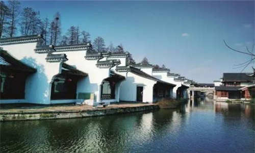
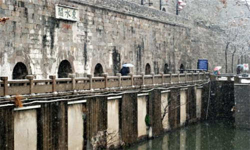
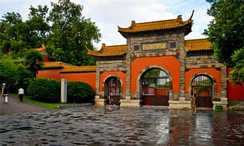

morly旅游网
秦淮区因秦淮河贯穿全境而得名，源于民国时期的第三区（门东区）和第四区（门西区）。秦淮区是古都金陵的起源，秦淮文化是金陵文化的精华，有“江南锦绣之邦，金陵风雅之薮”的美称，秦淮民俗民间文化是古老秦淮文化的重要组成部分，是“中国民间文化艺术之乡”。
秦淮区内自然河、人工河错落，有内秦淮河、青溪、玉带河、响水河、运粮河及小运河等。夫子庙秦淮风光带以夫子庙为中心，秦淮河为轴线、明城墙为纽带，包括瞻园、夫子庙、江南贡院、白鹭洲、中华门、老门东、大报恩寺遗址公园、老门西、愚园以及从桃叶渡至镇淮桥一带的沿河楼阁景观。
东水关
东水关旧称上水门，是秦淮河流入南京城的入口，始建于后唐长兴三年，距今已有1000多年的历史。水关共3层，每层11券，共33券，下层11券通水，上、中两层共22券为藏兵囤粮之用。现尚存中、下两层共22券。六朝时东水关是通向江浙方向的交通枢纽，南来北往的商贾齐聚东水关，在此经商交易。东水关遗址公园建于2001年，这里主要由水闸、桥道、藏兵洞、城墙四部分组成。
朝天宫
朝天宫位于南京市秦淮区朝天宫街道水西门内冶山，是江南规模最大、保存最为完好的一组古建筑群，现为南京市博物馆。今天的朝天宫古建筑群为战乱以后的清同治五年至九年（1866年－1870年）间在清前期原址上改建而成，从宋元明代的道教建筑变成了儒家的文庙和江宁府学（江宁府学旧址则改为武庙，民国时期改为考试院，在鸡鸣寺附近的南京市政府一带）；抗日战争胜利后，国民政府将南京朝天宫古建筑群开辟为南京首都高等法院。
甘熙故居
甘熙故居又称甘熙宅第或甘家大院，始建于清嘉庆年间，俗称“九十九间半”，是中国最大的私人民宅，与明孝陵、明城墙并称为南京明清三大景观，具有极高的历史、科学和旅游价值，是南京现有面积最大，保存最完整的私人民宅。甘熙故居并非徽派建筑，也不是完全的苏式建筑，而是和南京高淳、六合等地一样，有着南京自己的建筑风格，整个建筑反映了金陵大家仕绅阶层的文化品位和伦理观念。建筑的布局严格按照封建社会的宗法观念及家族制度而布置，讲究子孙满堂、数代同堂，致使宅第的规模庞大、等级森严，各类用房的位置、装修、面积、造型都具有统一的等级规定。

夫子庙
夫子庙位于南京市秦淮区秦淮河北岸贡院街、江南贡院以西，为供奉祭祀孔子之地，是中国第一所国家最高学府，也是中国四大文庙，为中国古代文化枢纽之地、金陵历史人文荟萃之地，不仅是明清时期南京的文教中心，同时也是居东南各省之冠的文教建筑群。夫子庙是一组规模宏大的古建筑群，主要由孔庙、学宫、贡院三大建筑群组成，占地极大。有照壁、泮池、牌坊、聚星亭、魁星阁、棂星门、大成殿、明德堂、尊经阁等建筑，是中国最大的传统古街市，与上海城隍庙、苏州玄妙观和北京天桥为中国四大闹市。
仓顶大井
仓顶大井位于秦淮区西南隅凤台冈之巅，是南京现存最大的古井。其名源于明代骁骑卫屯粮之所的骁骑仓而得名。由于此仓，并派生出仓山、仓顶、仓坡、仓门口等一组地名群，而仓顶大井已成为这组地名群中最醒目的地物标志。1992年新扩集庆路，大井已坐落在路边。石栏呈六角形，高55厘米，井口直径50厘米。1982年，全市开展文物普查时，群众提供的古井线索即有430口。特别是门西之地，小街相接，曲巷回环，古井、名井颇多，但诸多水井，今已湮废，旧迹难寻。
刘钦差故居
刘钦差故居是指清代大臣刘瑞芬，位于殷高巷14号。这里已列为南京市文物保护单位。宅主刘瑞芬，字芝田，安徽贵池人。生于清道光七年（1827年），历任军械转运局、松沪厘局，光绪二年（1876年）代理两淮盐运使，三年代理苏松太兵备道，参加中俄谈判，十一年为钦差大臣出使英、俄等国，十二年又出使英、法、意、比四国，所以人称“刘钦差”。十四年冬，任广东巡抚，十七年为乡试监临，积劳成疾，触发肝疾，十八年（1892年）病逝，终年六十六岁。刘钦差故居为秦淮名宅之一，《清史稿》中有刘瑞芬传略。
 程先甲故居
程先甲故居坐落于中华门西大百花巷11号，该故居房屋纵深七进，其中轴线与街巷呈垂直状。程先甲（1872年—1932年），字鼎丞，又字一夔，江宁人。因居住大百花巷，其笔名欣然自称“百花仙子”。他对训诂、音韵之学，研究殊深。在清末文字改革运动中，尤其在汉语拼音方面，他是我国南方的先驱者。民国以后，任职于苏、陇、蒙、鄂等地，仍以书册相随，积稿满箱。程先甲终其一生，成书40余种，计100余卷，合为《千一斋全书》。其中有的已被列入国务院古籍整理出版规划。他的传世之作——《金陵赋》。
蒋百万故居
蒋百万故居位于城南三条营18、20号。99间半房屋，原有两个院落，有轿厅、大厅、楼房，内有花园，外有封火墙。房主蒋寿山，号称蒋百万。《天京录》有所记载。现外墙面东有石碑一块，光绪元年四月立，内容为有关官沟事。院内多为青石和方石铺地。房内天花板、地板。第六进为二层楼，五间大厅及长廊完整，房门门框有精致木雕。面积8.4米*34.8米。该处建筑为市级文物保护单位。
王导谢安纪念馆
乌衣巷位于秦淮区秦淮河上文德桥旁的南岸，地处夫子庙秦淮风光带核心地带，是中国历史最悠久最著名的古巷，当时中国世家大族居住之地，三国时是吴国戍守石头城部队营房所在地。乌衣巷是晋代王谢两家豪门大族的宅第，两族子弟都喜欢穿乌衣以显身份尊贵，因此得名。乌衣巷门庭若市，冠盖云集，走出了王羲之、王献之，及山水诗派鼻祖谢灵运等文化巨匠。乌衣巷见证了王谢的艺术成就，与两大家族的历史，乃至整个中国文化的历史紧密相连。1997年，秦淮区人民政府恢复了乌衣巷，挖掘、展示乌衣巷源远流长的历史，并重建了具有民族风格的王谢古居纪念馆。
内容整理至网络，如有侵权，请联系我们！1255394075@qq.com